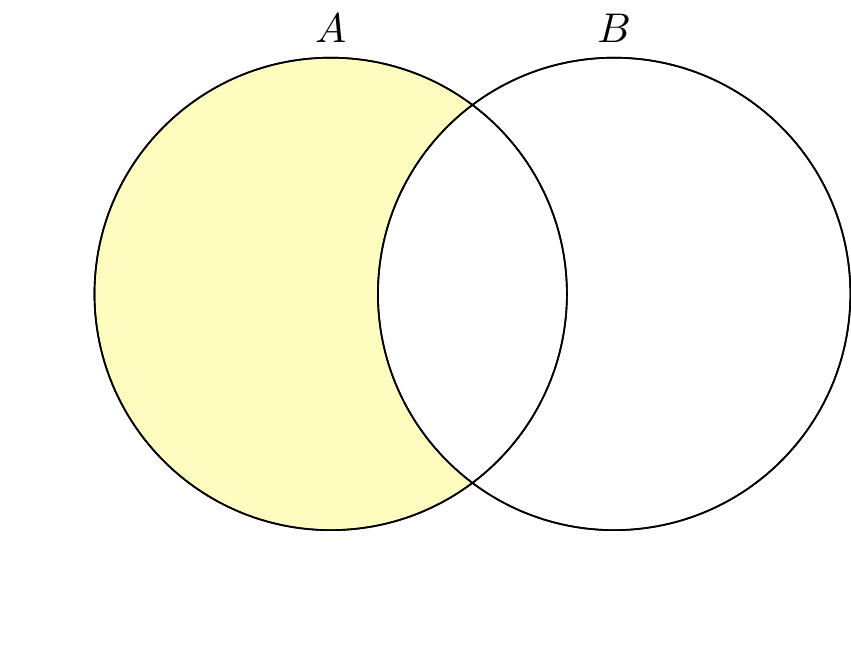
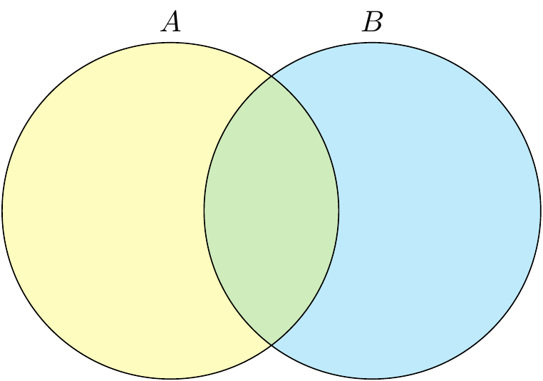
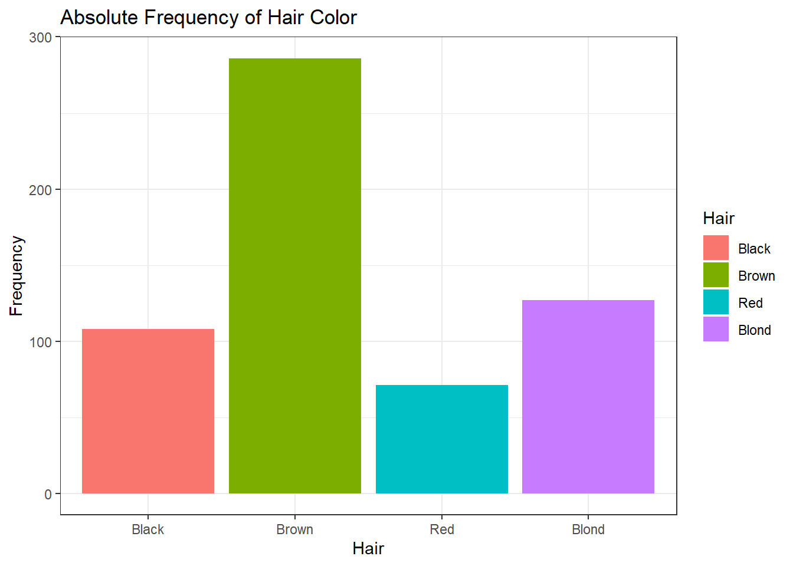
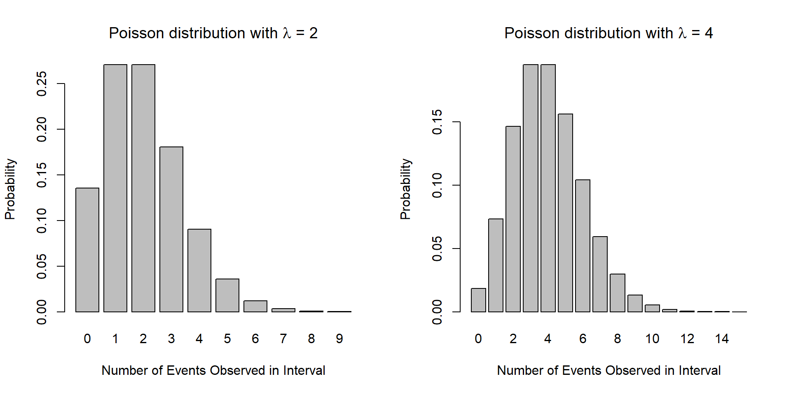

1 Probability Distributions
- Understand how a distribution represents a random process that creates data that is then observed
- Understand how the parameters of a distribution govern how the data is generated [and with what probability]
- Be able to identify which distributions underlying a given real world random process.
In the previous chapter, we introduced the idea of random processes, which are situations where the outcome can not be determined perfectly in advance. We encounter random processes all the time in our lives, from the exact amount of time it takes to get to class from your home, to determining the winner of a football game. In any case, the random process is defined in terms of the collection of possible events and their associated probabilities. While the number of unique outcomes of a random process may be impossible to count, we will find that many of them have a very similar underlying structure dictating how these events occur. Formally recognizing the properties of these structures, as well as understanding how they can be used to make predictions, motivates the goals of this chapter.
1.1 Introduction to Probability Distributions
Most simply, a probability distribution (often just called a distribution) is a method for taking a possible event as input, and giving us the corresponding probability as output. The corresponding probability tells us how likely it is that the specific event will occur, out of all of the possible events. A helpful metaphor is to consider a machine that produces these events at random frequencies corresponding to their associated probabilities. That is, if our machine only creates green marbles and red marbles, and the probability of producing a green marble is 75%, then on average, our machine will make 3 green marbles for each red one. In this sense, we can think of distributions as “data generating mechanisms” - the distributions govern how the machine which generates data works.
To continue with the machine metaphor, it will be important for us to distinguish between two machines that are completely different, and two machines that are the same but tuned to different settings. These settings, which we call distribution parameters, dictate many aspects of how the machine will generate data, including the range of likely events, how likely these events are to occur, and how much variability we might expect in the events that we observe. To briefly illustrate, we might first consider a normal distribution, which is governed by two parameters: the mean value, \(\mu\), and the amount of variability, \(\sigma^2\). A plot of two normal distributions is given below:

As we can see, these two curves are quite similar, and indeed, the underlying process that created each of them is the same. What is different, however, are the parameters governing how the data were generated. With this in mind, we have three goals for the present chapter
- Understand how a distribution represents a random process that creates data that is then observed
- Understand how the parameters of a distribution govern how the data is generated [and with what probability]
- Be able to identify which distributions underlying a given real world random process.
Probability Distribution: A method for assigning probabilities to all possible events
Distribution Parameters: Values associated with a probability distribution that determine how the data is generated
1.2 Flipping Coins
In the previous chapter, we examined the possible events and associated probabilities with flipping a fair coin three times. In particular, we noted the collection of possible events was given by
\[\mathcal{S} = \{HHH, HHT, HTH, THH, TTH, THT, HTT, TTT\},\] and the respective probabilities for the number of heads were
| # Heads | Probability |
|---|---|
| 0 | 1/8 |
| 1 | 3/8 |
| 2 | 3/8 |
| 3 | 1/8 |
In what ways might we formalize this as a process? We might start by identifying a few details about this experiment. First, we know that we are interested in coin flips, where each flip could be either one of two outcomes. We might also recognize that in this experiment we flipped a coin three times, with each flip having an equal probability of being Heads as it did Tails. In light of our previous discussion, which of these properties seem characteristic of a more general underlying process, and which of these could be changed while retaining the more general form? If we had flipped the coin 50 times, would the process be fundamentally different? Would this process be different if the probability of Heads was twice that of Tails?
What we have identified above is a data generating mechanism, or distribution, known as the binomial distribution, in which each outcome is one of two states. In this example, the two states were Heads and Tails, but it could just as easily be described as success vs failure, adverse reaction vs non-adverse reaction, death vs non-death, etc.,. Most generally, we will consider the outcome to be either an “event” or a “non-event.”
We next turn our attention the parameters of the distribution. As you may have guessed, there are two parameters associated with the binomial distribution, namely the number of observations (or flips), denoted \(n\), and the probability of a particular outcome being classified as an event, denoted \(p\). In our coin flipping example, flipping the coin three times gives us a parameter value of \(n = 3\). As we were interested in counting the number of Heads, we will call this our “event,” and note that it occurs with probability \(p = 0.5\). Together, these pieces define everything we need to know about a random process that follows a binomial distribution. Notionally, we write
\[ X \sim Bin(n, p)\]
or, “the random variable \(X\) follows a binomial distribution with \(n = 3\) and probability of event \(p = 0.5\).” Our coin flipping example would then be expressed as \(X \sim Bin(n = 3, p = 0.5)\), where \(X\) is our experiment.
1.3 Functional Representation of Probability Distributions
We turn our attention now to the practical problem of determining how we might relate the idea of a probability distribution to determine the actual probabilities of given outcomes. From our definition above, we see that at a minimum, all we need is a method to assign a probability to a given event; within these bounds, we have a number of options available.
Perhaps the most direct method of doing so consists of counting each of the possible outcomes by hand and determining their probabilities, which is precisely what was done when we identified \(\mathcal{S}\) and then counted the frequency in which different numbers of Heads occurred. This, of course, can become cumbersome quite quickly: with only \(n = 3\), we identified a total of 8 separate outcomes. If \(n\) were 4, this would increase to 16. One can quickly see the issue when considering an experiment in which the total number of coin flips was equal to \(n = 50\). This example was further made easier by the fact that each of the outcomes was equally likely; if the value of \(p\) was anything but \(0.5\), our task of assigning probabilities to these outcomes would have been significantly more challenging (see Chapter 4).
Another possibility involves the use of simulation, the justification for which is covered in more detail in another chapter. By simulating this experiment a large number of times, we can determine the relative probabilities by counting the relative frequency of each outcome, which saves us the trouble of having to compute them mathematically. Here, we simulate this experiment \(N = 10,000\) times, and record the total number of heads in each experiment, dividing by the total number of experiments to get our desired probability
| Number of Heads | Fraction | Observed Probability | True Probability |
|---|---|---|---|
| 0 | 1,315/10,000 | 0.1315 | 0.125 |
| 1 | 3,712/10,000 | 0.3712 | 0.375 |
| 2 | 3,744/10,000 | 0.3744 | 0.375 |
| 3 | 1,229/10,000 | 0.1229 | 0.125 |
Of course as we can see, simulations have their own limitations: they often require a large number of replications, and because of randomness, the observed probabilities will rarely be exactly equal to the true probabilities. Nonetheless, simulations prove to be exceedingly useful when our experiment is complicated, or if a known distribution function for our problem does not exist.
Our final method for specifying a probability distribution is with the use of a mathematical function, often referred to as a probability distribution function (pdf) or probability mass function (pmf), with the former reserved for continuous variables and the latter for those that are discrete. The binomial distribution, consisting of discrete outcomes, is specified with a pmf. For \(X \sim Bin(n, p)\), we have the following formula:
\[ P(X = x) = \binom{n}{x} p^x (1-p)^{n-x} \]
where \(n\) and \(p\) are our distribution parameters, and \(X\) can take any of the values \(x = 0, 1, \dots, n\). Perhaps new to us here is the leading term in the expression above, \(\binom{n}{x}\), called the binomial coefficient, which can be written as
\[ \binom{n}{x} = \frac{n!}{x!(n-x)!} \] where \(n! = n \times (n-1) \times \dots \times 2 \times 1\) (known as a factorial). In words, we might say \(\binom{n}{x}\) as “\(n\) choose \(x\).” While this may seem daunting at first, the need for it is quite reasonable. Consider again our coin flipping experiment, where the possible outcomes were listed as
\[ \mathcal{S} = \{HHH, HHT, HTH, THH, TTH, THT, HTT, TTT\}. \]
If we are interested in determining the probability of observing two Heads, it is of note that there are a number of instances above in which two Heads occurs. We might ask ourselves, “if we have \(n = 3\) flips, how many ways might we choose \(x = 2\) heads?” Writing this with our binomial coefficient, we find that
\[ \binom{3}{2} = \frac{3!}{2!(3-2)!} = \frac{3 \times 2 \times 1}{2 \times 1 \cdot(1 \times 1)} = \frac62 = 3, \] and indeed, 3 is precisely the number of outcomes in \(\mathcal{S}\) in which two Heads occur. Finally, using the pmf above, we can substitute in our distribution parameters \(n = 3\) and \(p = 0.5\) to find the distribution function that describes our experiment:
\[ P(X = x) = \binom{3}{x} (0.5)^x (1-0.5)^{3-x} \] [Exercise: verify that the probabilities returned by the binomial pmf match the true probabilities in the table above by plugging in values for \(X = \{0, 1,2,3\}\). ]
1.3.1 Plotting the PMF
It is often useful to create a visual representation of a pmf as well. Doing so quickly gives us an idea of where data tend to aggregate and how the data are dispersed. Below are two plots representing two different sets of parameters for the binomials distribution. What do you notice in how they differ? How are they similar? What impacts do the different parameters have on the distribution of the data?

Of particular note here, we recall from the previous chapter that the sum of all possible probabilities must be equal to one. Visually, this is represented by the total area of the bars in our plot. Given that our bars our rectangles, we can find the area by considering that the width of each bar is equal to 1, and it’s height is given by the probability of \(X = x\), which can be found using the PMF. On the left hand side, for example, from left to right, we have
\[ \begin{align} \text{Total Area } &= \text{ \{Area of Heads = 0\} + \{Area of Heads = 1\} + } \\ & \quad \ \ \text{\{Area of Heads = 2\} + \{Area of Heads = 3\}} \\ &= (1 \times P(X = 0)) + (1 \times P(X = 1)) + (1 \times P(X = 2)) + (1 \times P(X = 3)) \\ &= 0.125+0.375+0.375+0.125 \\ &= 1 \end{align} \] If, say, we are interested in the probability that \(X = 2\) or \(X = 3\), we can add the area of the two corresponding bars. In this case, we find \(P(X = 2, 3) = 0.75\).
[Include binomial app here. See that clicking bars adds to something. Explain changing settings, clicking bars, selecting different things. Come up with exercises below, i.e., prob that even if n = 8, prob if even n = 4, etc.]
1.4 Measuring Heights
Often, our data will not fit nicely into a finite number of discrete categories, leaving us with continuous data that are described with a probability distribution function, or pdf. As our data does not fit neatly into categorical bins, many of the techniques described above will not work in the same way here. Rest assured, the idea is exactly the same. While we will spare the technical details here, interested readers may consider what follows to be analogous to the cases presented above when the number of “bins” becomes infinite.
Our motivating example here will consider the process of determining the height of individuals within a population. Unlike the binomial distribution, where the underlying process and associated parameters were easily teased apart, the components here are less obvious, and some care will be needed to identify them. Height data, like many things in the natural world, tend to follow a symmetric distribution, where most observations tend to gather around a mean value, with observations deviating from the mean being equally likely to fall some distance above the mean as below, their frequencies becoming smaller as this distance increases. That is to say, if the mean height of a population is 68 inches, an individual is equally likely to be 67 inches tall as they are 69 inches. Similarly, an individual is equally likely to be 64 inches as they are 82. However, given their proximity to the mean value, an individual is far more likely to be either 67 or 69 inches (1 inch from the mean) than they are to be either 64 or 82 inches (4 inches from the mean).
The process described above describes what is known as a normal distribution, colloquially referred to as a “bell curve.” There are a number of properties that together characterize a normal distribution
- There are two parameters for the normal distribution, the mean \(\mu\) (pronounced “myu”) and the variance \(\sigma^2\) (“sigma squared”)
- \(\mu\) is the mean, or expected value, and represents the most probable value of the distribution. That is, observations from a normal distribution are more likely to be close to \(\mu\) than away from it
- Observations are equally likely to be the same magnitude above \(\mu\) as they are below it. In other words, the distribution is centered around \(\mu\). We see this concept expressed in everyday language when we offer estimates of some value: “The cost is ‘x,’ plus or minus ‘y’”
- The second parameter, \(\sigma^2\), describes how concentrated values are around the mean. The smaller the value of \(\sigma^2\), the more observations that will be close to \(\mu\). Likewise, larger values of \(\sigma^2\) result in higher dispersion, or more values further away from \(\mu\).
Notationally, if a random variable \(X\) follows a normal distribution with mean \(\mu\) and variance \(\sigma^2\), we write \(X \sim N(\mu, \sigma^2)\). A special case of this that will be explored in following chapters is known as a standard normal distribution, which arises when the mean value is \(\mu = 0\), and the variances is \(\sigma^2 = 1\). This distribution is often written with its own letter \(Z\), as in \(Z \sim N(0, 1)\).
Another critical difference between a continuous and discrete random variable is the way in which we determine probability. In the discrete case, we could enumerate all of the events and determine their relative frequency. Alternatively, we could run a simulation and simply count how often each outcome occurred. In the continuous case, however, there is no finite set of possibilities (i.e., somebody could be 68" tall, 68.1" tall, 68.01", …), and any attempts to enumerate these will only terminate in frustration; we will determine the implications of this below. In the meantime, however, we will rejoice in knowing that a normal distribution can be mathematically represented by it’s probability function:
\[ f(x) = \frac{1}{\sqrt{2\pi \sigma^2}} \ e^{- \frac{(x-\mu)^2}{2\sigma^2}} \] As we can see, the pdf contains both of the distribution parameters, \(\mu\) and \(\sigma^2\). As we saw at the beginning of the chapter, different values for these parameters gives us different curves:

Of particular interest above, notice how the value of \(\mu\) changes where the data are aggregated, and similarly, note how larger values of \(\sigma^2\) results in a greater amount of dispersion.
Let’s now return to the issue of determining the probability of a particular event. In the discrete case, we saw that we could examine the plot of the pmf and multiply the width of each bin (which was equal to 1), with the height of the bin, given by the pmf While the pdf here does indeed give us the “height,” we quickly run into an issue when considering the width: the only way we can have an “infinite” number of bins for each outcome is to assign each bin a width of 0. As such, the probability of any particular event is unintuitively assigned a probability of zero.
This apparent shortcoming can thankfully be remedied with the tools of calculus. Where discrete observations allow us to take a sum, the analogous case for continuous intervals is satisfied by the use of the integral. As it no longer makes sense to consider the probability of specific events (all of which will be zero), we instead consider the probability that an observation falls within a range of events. For example, if we have a random variable with \(X \sim N(\mu, \sigma^2)\), the probability that \(X > 3\) can be written
\[ P(X > 3) = \int_3^{\infty} \frac{1}{\sqrt{2\pi \sigma^2}} \ e^{- \frac{(x-\mu)^2}{2\sigma^2}} \ dx \] Similarly, if we were curious to know the probability that \(X\) was between a range of values, say \(2 < X < 5\), we would write
\[ P(2 < X < 5) = \int_2^{5} \frac{1}{\sqrt{2\pi \sigma^2}} \ e^{- \frac{(x-\mu)^2}{2\sigma^2}} \ dx \] Fortunately for us today, this no longer need be computed by hand. A number of computational resources are able to compute this for us with minimal effort.
[Using app below, explore different parameter values. Use slider to select a range of probabilities. Note that the area of interest is highlighted. Do exercises with it]
Binomial Distribution: A discrete distribution in which there are two possible outcomes, “events” and “non-events.” There parameters are \(n\), which dictate the number of trials, and \(p\), determining the probability of an event
Normal Distribution: A continuous distribution with two parameters that is symmetric about a mean value, \(\mu\), with a variance \(\sigma^2\). Many real world processes follow a normal distribution.
Standard Normal Distribution: A special case of the normal distribution, \(Z \sim N(0, 1)\)
Probability Mass Function: A probability function used for discrete random variables. The probability of outcomes is given as a sum
Probability Distribution Function: A probability function used for continuous random variables. The probabilities of outcomes are taken over a range, given as an integral.
1.5 Other Common Distributions
Having examined in detail both discrete and properties distributions, demonstrated with the binomial and normal distributions, respectively, we consider below a brief overview of other common distributions and their properites.
1.5.1 Poisson Distribution
The Poisson distribution, like the binomial, is a discrete distribution, in that it concerns itself with count data. Specifically, a Poisson distribution describes the number of independent events that may occur within a fixed interval of time. For example, we may be interested in the number of cars that pass through a busy intersection from noon to 1pm every day, or the number of major floods that occur in an area every 100 years. Perhaps the most famous example of the Poisson distribution comes courtesy of Ladislaus Bortkiewicz, a Russian statistician who, in 1898, showed that the number of Prussian soldiers killed by being kicked by a horse in a twenty year period followed a Poisson distribution (also child suicides, but that’s less fun).
The Poisson distribution has a single parameter, \(\lambda\), which describes the rate at which events occur, and a random variable following a Poisson distribution may be expressed as \(X \sim Pois(\lambda)\) (People who write \(X \sim Po(\lambda)\) are heathens). A random variable following a Poisson distribution has the following assumptions:
- The value of \(X\), being a count, can be any non-negative integer, i.e., \(0, 1, 2, \dots\) with no upper bound
- The occurrence of one event in a time interval is independent of another event. One soldier being kicked by a horse has no impact on the probability of another solider being kicked by a horse.
- \(\lambda\), which may be any number greater than \(0\), describes the rate at which events occur
- [Two events cannot occur at the exact same time, though they probably don’t need this]
The distribution function of a Poisson random variable with rate \(\lambda\) can be expressed
\[ P(X = x) = \frac{\lambda^x e^{-\lambda}}{x!} \] One surprisingly detail about the Poisson distribution is the relationship between the mean and the variance. For both, we have that \(E(X) = Var(X) = \lambda\).
1.5.1.1 Plots for Poisson
As we look at the plot for the Poisson, we will notice one aspect in particular that distinguishes it from the plots of both the binomial and normal distributions: it is no longer symmetric. This is a consequence of the range of values that a Poisson random variable can take on. Whereas a binomial random variable was bounded between \(0\) and \(n\), the number of trials conducted, and where the normal distribution allowed any real number, the Poisson is bounded below by \(0\), while having no theoretical upper bound. Given below is a plot of the distribution with \(\lambda = 2\) and \(\lambda = 4\) (it’s obvious here that choosing a specific value is inadequate. We can replace these plots with distribution exploration apps)

Just as with the binomial distribution, we can determine the probability of an event or collection of events by determining the area of the bars in our plot. Below is an interactive app to do stuff. Exercises